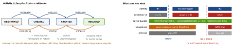

android · folio
In one line: An Activity is destroyed and recreated on every configuration change
(rotation, locale, dark mode, window size); the ViewModel survives that, the
saved-state Bundle survives process death, and Compose redraws UI as a
function of state — re-running only the composables that read a changed
State.
Download PDF Print view LaTeX source


Lifecycle, ViewModel, process death
- Config change ⇒
onPause/onStop/onDestroy+ a new ActivityonCreate(savedInstanceState): fields and views gone.android:configChangesopts out — avoid. - Fragment: its view dies (
onDestroyView) while the instance sits on the back stack ⇒ observe withviewLifecycleOwner. - ViewModel lives in a
ViewModelStore(Activity, Fragment or nav entry) carried across recreation;onCleared()only when the owner finishes.viewModelScope=SupervisorJob+Main.immediate, cancelled there. - Process death: killed in background; on return a new process rebuilds the Activity from the Bundle + a new VM.
SavedStateHandle(VM) andrememberSaveable(UI) write that Bundle — ids, not data (Binder ≈1 MB →TransactionTooLargeException). - Activity
Contextin a VM leaks it per rotation:applicationContext.
Compose — the model
- Phases: composition → layout → draw. Snapshot state records which scope read which
State; a write re-runs only those scopes. remembersurvives recomposition only;remember(key)recomputes on key change;rememberSaveablealso survives rotation + death (Bundle types or aSaver). Hoisting: statelessFoo(value, onValueChange).- Skipping: skipped if all params are stable and equal. Stable: primitives,
String, lambdas,val-only classes,@Immutable/@Stable. Unstable:var,List(interface), types from non-Compose modules. Strong skipping (default, Kotlin 2.0.20+): unstable params compared by identity, lambdas auto-remembered. - Modifier order wraps:
size(100.dp).padding(10.dp)= 80 dp content; reversed = 120 dp total.clickablefirst = padding tappable.
Example — VM + hoisted screen
class SearchVM(saved: SavedStateHandle, val repo: Repo)
: ViewModel() {
val query = saved.getStateFlow("q", "") // survives death
private val _ui = MutableStateFlow<Ui>(Ui.Idle)
val ui = _ui.asStateFlow() // read-only
fun onQuery(q: String) { saved["q"] = q
viewModelScope.launch { _ui.value = repo.search(q) } }
}
@Composable fun Search(vm: SearchVM = viewModel()) {
val q by vm.query.collectAsStateWithLifecycle()
SearchBar(q, onChange = vm::onQuery) // hoisted
LaunchedEffect(q) { delay(300); log(q) } // per q
}Compose ↔ SwiftUI (incl. effects)
| Compose / Android | SwiftUI / iOS |
|---|---|
@Composable fun — re-run function | body — value tree, diffed |
remember { mutableStateOf() } | @State |
hoisted value + onValueChange | @Binding |
rememberSaveable | @SceneStorage |
ViewModel + StateFlow, collectAsStateWithLifecycle | @Observable
model in @State |
CompositionLocal | @Environment |
Modifier chain · slot lambdas | modifiers · @ViewBuilder |
items(list, key = { it.id }) (else index) | ForEach(id:) |
AndroidView · ComposeView | UIViewRepresentable ·
UIHostingController |
NavHost + back stack | NavigationStack(path:) |
LaunchedEffect(k): coroutine on enter, relaunched when k changes,
cancelled on leave | .task(id:) |
DisposableEffect(k): setup + onDispose{} | onAppear /
onDisappear |
SideEffect{}: after every successful recomposition, push to non-Compose code | updateUIView |
rememberCoroutineScope: coroutines from callbacks | Task {} in an action |
rememberUpdatedState: latest value in a long effect, no restart | — |
derivedStateOf: recompose only when the result changes | computed property |
snapshotFlow (State→Flow) · produceState | — |
Traps
- Rotation recreates the Activity — the iOS reflex “the VC stays” loses state. Three tiers:
remember< ViewModel < Bundle. - VM does not survive process death. “Don’t keep activities” only destroys Activities; real death:
adb shell am kill <pkg>while backgrounded. mutableStateOf(0)withoutrememberresets each recomposition.LaunchedEffect(Unit)never restarts (stale id).- Fast state (
scrollState.value) read high up recomposes the screen — defer the read: lambda,graphicsLayer{},derivedStateOf. - Bodies re-run often, in any order: no I/O or writes.
Remember
remember < ViewModel < Bundle · state down, events up · read late, key your effects.